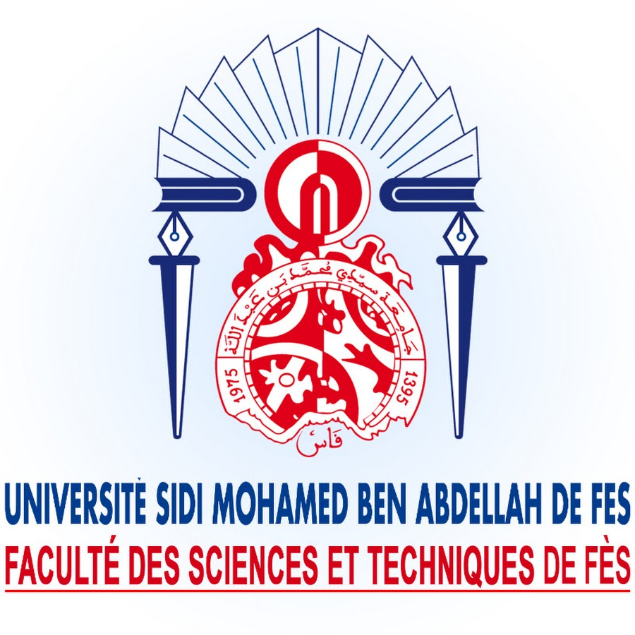

Faculté des Sciences et Techniques de Fès
Université Sidi Mohamed Ben Abdellah (USMBA)

Bienvenue sur votre plateforme académique
"Un espace dédié à la transmission du savoir mathématique et à l'accompagnement des étudiants vers l'excellence."
Aucun résultat ne correspond à votre recherche. Essayez avec d'autres mots-clés (ex: Analyse, TD, Examens).
Parcours académique et axes de recherche
Le Pr. Mahmoud El Ahmadi est enseignant-chercheur au Département de Mathématiques de la FST de Fès. Ses activités se concentrent sur l’Analyse Non Linéaire, l'étude des équations aux dérivées partielles (EDP) et des équations différentielles.
Affilié au LMSM, il privilégie l'approche par modélisation mathématique pour résoudre des problèmes complexes issus des sciences de l'ingénieur.
Ressources : Supports de cours, séries de TD et examens mis à jour.
Communication : Contact via adresse institutionnelle @usmba.ac.ma.
Méthodologie : Importance de la préparation des exercices de TD.
pedagogie cours td travaux dirigés exercices séries serie 1 serie 2 serie 3 serie 4 examens controles annales rattrapage sessions
analyse 1 analyse i analyse 2 analyse ii analyse 4 analyse iv
2024 2025 2026 semestre s1 s2 s3 s4 licence master supports ressources